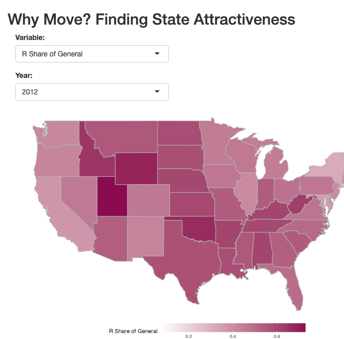

── Attaching core tidyverse packages ──────────────────────── tidyverse 2.0.0 ──
✔ dplyr 1.1.4 ✔ readr 2.1.5
✔ forcats 1.0.0 ✔ stringr 1.5.1
✔ ggplot2 3.5.0 ✔ tibble 3.2.1
✔ lubridate 1.9.3 ✔ tidyr 1.3.1
✔ purrr 1.0.2
── Conflicts ────────────────────────────────────────── tidyverse_conflicts() ──
✖ dplyr::filter() masks stats::filter()
✖ dplyr::lag() masks stats::lag()
ℹ Use the conflicted package (<http://conflicted.r-lib.org/>) to force all conflicts to become errors
Breaking News: tmap 3.x is retiring. Please test v4, e.g. with
remotes::install_github('r-tmap/tmap')
Attaching package: 'maps'
The following object is masked from 'package:purrr':
mapWarning: There were 4 warnings in `mutate()`.
The first warning was:
ℹ In argument: `Different state of residence 1 year ago: MOE =
as.numeric(gsub(",", "", "+/-", `Different state of residence 1 year ago:
MOE`))`.
Caused by warning:
! NAs introduced by coercion
ℹ Run `dplyr::last_dplyr_warnings()` to see the 3 remaining warnings.Warning: There was 1 warning in `mutate()`.
ℹ In argument: `GENERAL.RESULTS = as.numeric(gsub(",", "", GENERAL.RESULTS))`.
Caused by warning:
! NAs introduced by coercionrsconnect::setAccountInfo(name='jamesono', token='11E2EC17D4FB42DE212783B0C6A4B82E', secret='kQ4wpjs36zEXbUN+4SKgeYGquvFlAoDmVVOfXoRJ')
all_variables_dataset <- subset(all_variables_dataset, YEAR != 2016)
usMap <- function(dataset, variable) {
us_map_data <- map_data("state")
merged_data <- merge(us_map_data, dataset, by.x = "region", by.y = "STATE", all.x = TRUE)
color_gradients <- list(
"R Share of General" = c("white", "deeppink4"),
"Median Household Income" = c("white", "darkcyan"),
"Abortions_per_1000_women" = c("white", "chartreuse4"),
"Abortions_per_1000_live_births" = c("white", "chartreuse4"),
"Same house 1 year ago: Estimate" = c("white", "chocolate4"),
"Population 1 year and over: Estimate" = c("white", "chocolate4"),
"Same state of residence 1 year ago: Estimate" = c("white", "chocolate4"),
"Different state of residence 1 year ago: Estimate" = c("white", "chocolate4")
)
gradient_colors <- color_gradients[[variable]]
g <- ggplot(merged_data) +
geom_polygon(aes(x = long, y = lat, group = group, fill = .data[[variable]]),
color = "gray70", size = 0.5) +
scale_fill_gradient(
low = gradient_colors[1],
high = gradient_colors[2],
na.value = "grey",
limits = range(dataset[[variable]])
) +
theme_void() +
theme(legend.position = "bottom") +
theme(legend.key.width = unit(2, "cm"))
return(g)
}
ui <- fluidPage(
titlePanel("Why Move? Finding State Attractiveness"),
mainPanel(
selectInput("variable", "Variable:",
choices = colnames(all_variables_dataset)[!colnames(all_variables_dataset) %in% c("STATE", "YEAR", "Out_of_state_abortions(number and percentage)", "Different state of residence 1 year ago: MOE", "Same state of residence 1 year ago: MOE", "Same house 1 year ago: MOE", "Population 1 year and over: MOE", "political_culture")]),
selectInput("year", "Year:", choices = unique(all_variables_dataset$YEAR)),
plotOutput("us_map", width = "750px", height = "450px")
)
)
server <- function(input, output) {
output$us_map <- renderPlot({
subset_data <- all_variables_dataset[all_variables_dataset$YEAR == input$year, ]
if (nrow(subset_data) == 0) {
return("No data available for the selected year.")
}
usMap(subset_data, input$variable)
})
}
shinyApp(ui = ui, server = server)
Listening on http://127.0.0.1:6784Warning: Using `size` aesthetic for lines was deprecated in ggplot2 3.4.0.
ℹ Please use `linewidth` instead.